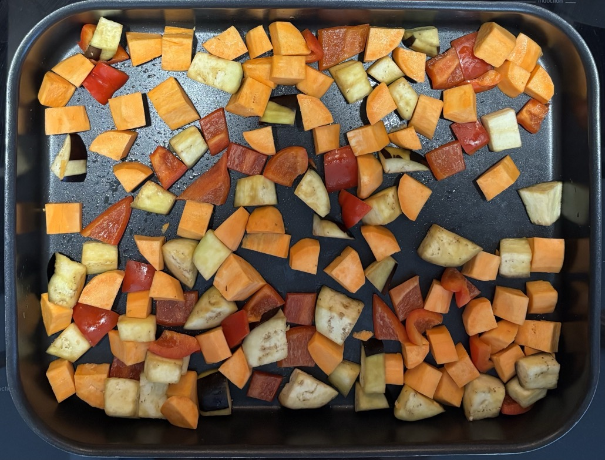

Curry from sauce
Spices
- Cardamom pods: replace with scant ¼ tsp
- Cloves: replace with 1 ground clove
- Peppercorns: grind
Veg
- Roast at 200°C
- squash 40 mins
- aubergine 30 mins, stripped
- sweet potato 30 mins
- pepper 30 mins
- mushroom 15 mins
Curry
- Fry for 5 mins
- 2 medium onions
- Add and cook for 5 mins
- 400-500g chicken
- Add and cook for 3 mins
- sauce 1
- Add and cook for 10 mins
- sauce 2
- 200-250g coconut milk / passata
- 1 tsp cornflour in water
- roasted veg
Serving
- 4-5 portions
Pics
